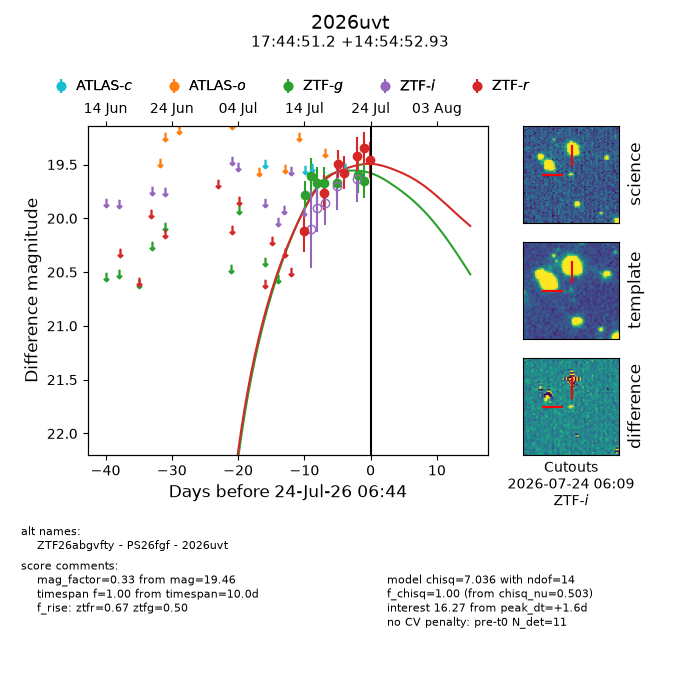
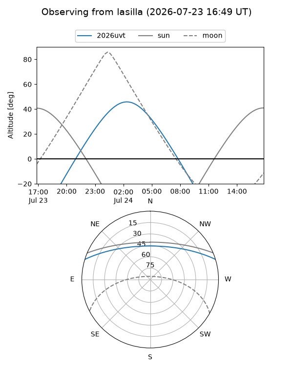
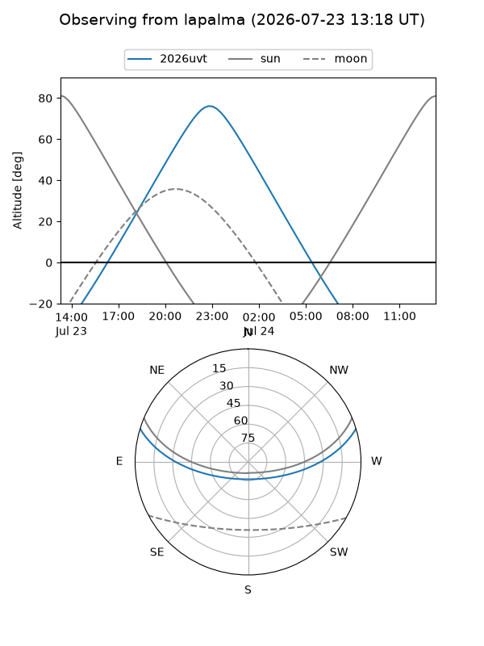
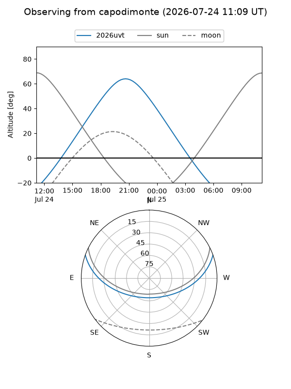
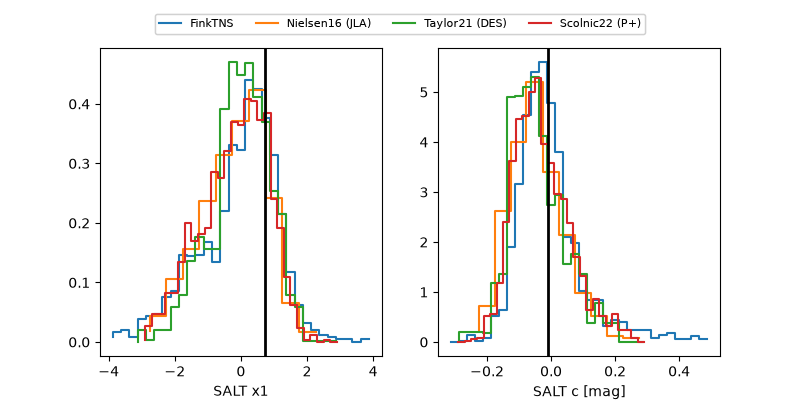

2026uvt
Target 2026uvt at 2026-07-24 06:46
Aliases and brokers:
FINK-ZTF: ztf.fink-portal.org/ZTF26abgvfty
Lasair-ZTF: lasair-ztf.lsst.ac.uk/objects/ZTF26abgvfty
ALeRCE-ZTF: alerce.online/object/ZTF26abgvfty
YSE-PZ: ziggy.ucolick.org/yse/transient_detail/2026uvt
TNS name: wis-tns.org/object/2026uvt
Direct TNS query: direct search
alt names
ZTF26abgvfty (ztf,fink_ztf)
2026uvt (tns,yse)
PS26fgf (panstarrs)
Coordinates:
equatorial (ra, dec) = 266.2133,+14.91470
equatorial (HMS+DMS) = 17:44:51.20,+14:54:52.93
galactic (l, b) = (39.2707,+21.32875)
Flags:
TNS type: nan
peak dt: +1.6
Photometry:
last ztfg=19.65, ztfr=19.46
7 ztfg, 7 ztfr detections
Lightcurve

Visibility



Additional plots
